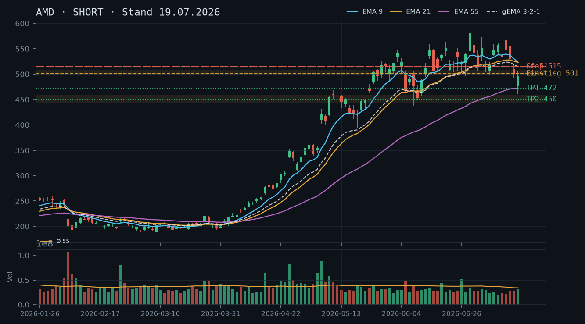
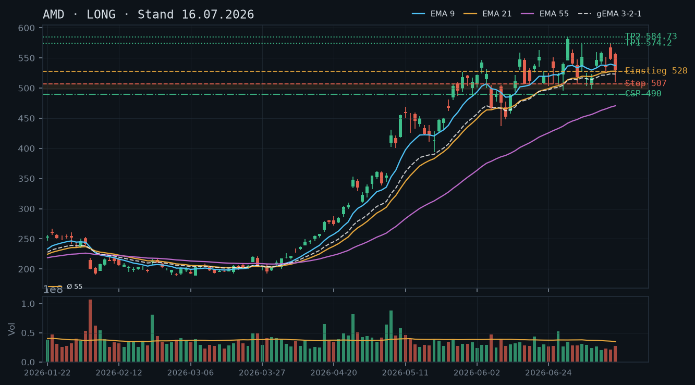
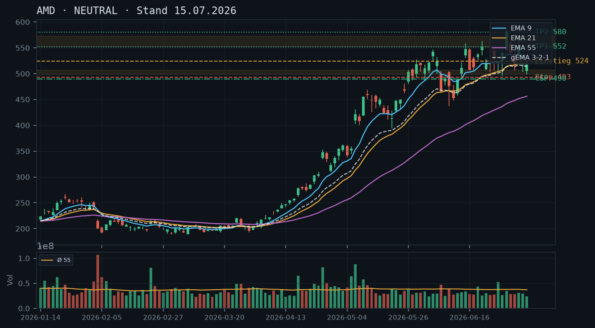
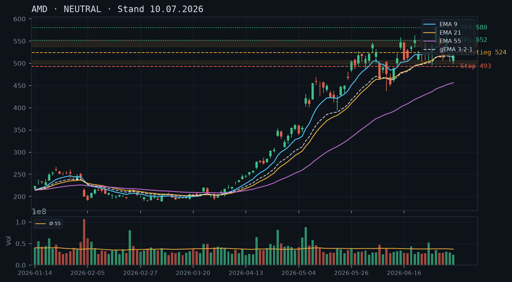
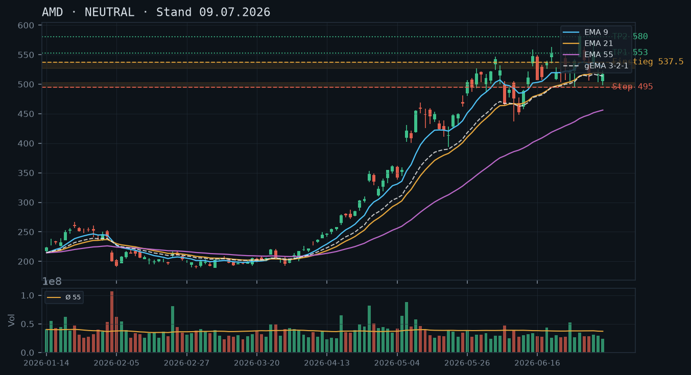
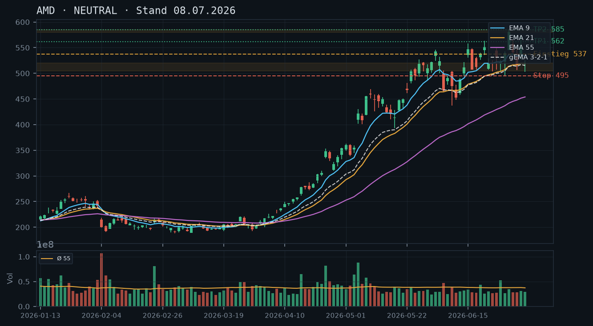

AMD
Analyse-Historie · neueste zuerstAMD erholt sich kräftig vom 460er-Tief zurück über 550, aber der übergeordnete Impuls-Bruch der 498–507-Zone ist strukturell relevant – die Erholung ist bislang ein Pullback in Widerstandszone, kein Trendwechsel; Short-Bias bleibt.

1 · Trendstruktur
Der übergeordnete Aufwärtstrend (Tiefs von 193 im März bis ATH 584,73 am 30.06.) ist nach dem nachhaltigen Bruch der mehrfach bestätigten Zone 498–507 am 16./17.07. (Tagesschlüsse 500,94 / 495,76) strukturell beschädigt. Die aktuelle Erholung (Tief 460,21 am 17.07. → Schluss 552,33 am 22.07., +20% in drei Tagen) nähert sich nun genau der ehemals tragenden Zone 498–507 von unten – die nun als Widerstand fungiert – und dem Verlaufshoch 558–562 vom 06./22.07. Die Trendstruktur bleibt Short-biased: Niedrigeres Hoch unter dem ATH (584,73) und ein gebrochenes Supportlevel als frischer Widerstand.
2 · Candlestick-Formationen
Die letzten drei Kerzen zeichnen eine klare Erholungssequenz: 20.07. kleiner Doji/Inside-Bereich (503,57), 21.07. starke bullische Marubozu-ähnliche Kerze (+40 Punkte, Schluss 544,43, rel. Volumen 0,87 – unterdurchschnittlich), 22.07. erneut bullisch (Schluss 552,33, Hochpunkt 561,47, rel. Volumen nur 0,74). Kritisch: Die Erholung läuft auf fallendem Volumen – das ist kein Überzeugungsanzeichen. Der Kurs nähert sich dem Widerstandscluster 555–562 mit schwindender Dynamik, was für einen Pullback-Charakter der Rally spricht, nicht für einen neuen Impuls.
3 · EMA-Lage (9 / 21 / 55)
EMA9 (529,96) liegt unter EMA21 (525,83), beide liegen deutlich unter dem aktuellen Kurs (557,20) – der Kurs ist nach oben abgehoben und hat die EMAs in kurzer Zeit von unten nach oben durchschlagen. EMA55 (478,94) zeigt weiter Steigung, da der massive Aufwärtsimpuls März–Juni noch eingerechnet ist. gema_321 bei 520,08 wirkt als nächster dynamischer Referenzwert. Die EMA-Konstellation (Kurs weit über EMA9/21, aber EMA9 noch unter EMA21) ist ein Kompressions-Artefakt der scharfen V-Bewegung und kein klassischer Aufwärtstrend-Stack – die kurzfristige Überdehnung zum gema_321 (+37 Punkte) ist erheblich.
4 · Trade-Setup
| Richtung | Short |
| Einstieg | 555,00–562,00 (Limit-Short im Widerstandscluster: gebrochene Zone 498–507 als langfristiger Deckel / Verlaufshoch 06.07. bei 572,50 als obere Grenze) |
| Stop | 575,00 (über dem Verlaufshoch 574,20 vom 14.07. – Rückeroberung würde die Short-These für diese Bewegung invalidieren) |
| Ziel | 520,00 (gema_321-Bereich) / 493,00 (untere Kante der gebrochenen Zone mit Puffer) |
| CRV | 1,9 : 1 (Ziel 1 bei 520) / 3,3 : 1 (Ziel 2 bei 493) |
5 · Stillhalter (max. 12 Tage)
Die bestehende Short-Aktienposition (800 Aktien short laut IBKR-Snapshot, kein Covered Call möglich) in Kombination mit dem Short-Bias ergibt: Ein Short Call OBERHALB des aktuellen Widerstands-Clusters ergänzt die Short-Equity-Position durch Prämieneinnahme und reduziert das Delta leicht. Ein CSP ist im bärischen Kontext mit Short-Aktienposition strukturell inkonsistent und wird nicht empfohlen.
| Geschäft | Covered Call |
| Strike | 570.0 |
| Puffer | 2.3 % |
| Zone | oberhalb des Widerstands-Clusters 555–562 (gebrochene Supportzone 498–507 / Verlaufshoch 06.07. bei 572,50 / Verlaufshoch 14.07. bei 574,20) |
| Verfall bis | 2026-08-01 (9 Tage) |
| Begründung | Strike 570 liegt oberhalb des dichten Widerstandsclusters 555–574 (Verlaufshochs 06.07. bei 572,50, 14.07. bei 574,20, ATH-Vorfeld). Die Zone sollte den Kurs bei nachlassendem Volumen abbremsen. Der Puffer von 2,3% ist angesichts der zuletzt hohen Tagesspannen (AMD bewegte sich in der Vorwoche täglich 20–40 Punkte) eng – dies ist zu beachten. Andienung bei 570 wäre im bärischen Kontext ungünstig (Short-Squeeze-Szenario), daher ist ein Rückkauf-Stop bei Tagesschluss über 572,50 einzuplanen. WICHTIG: Die Short-Aktienposition bedeutet, dass dieser Short Call KEIN Covered Call im klassischen Sinne ist – es handelt sich um eine komplexe Kombinationsposition mit separatem Margin-Profil. Vor Ausführung Margin-Anforderungen bei IBKR prüfen. In der Optionskette prüfen: Prämie am 570er Call (Verfall 01.08.), Delta (Ziel unter 0,30 für moderates Exposure), Bid-Ask-Spread und implizite Volatilität nach der starken Bewegung der letzten Woche. |
Bestand: Laut IBKR-Snapshot (11:36 Uhr, 23.07.) besteht eine Short-Aktienposition in AMD, keine offenen Optionspositionen. Die Short-Equity-Position ist mit dem SHORT-Bias konsistent und hat vom Rückgang seit ATH (584,73) bis Tief (460,21) profitiert. Aktuell befindet sich die Position im Drawdown durch die laufende Erholung (+20% vom Tief). Kritische Marken für die Short-Position: Tagesschluss über 572–574 (Verlaufshochs) wäre ein Signal zur Positions-Reduktion; Tagesschluss über 584,73 (ATH) würde die Short-These vollständig invalidieren und erfordert Stop-Exekution. Ein zusätzlicher Short Call (Strike 570, Verfall 01.08.) würde durch Prämieneinnahme den aktuellen Drawdown der Aktienposition leicht dämpfen, aber das Gewinnpotenzial der Short-Aktien oberhalb von 570 begrenzen – Abwägung erforderlich.
Ausführliche Analyse vom 23.07.2026 anzeigen
AMD – Detailanalyse 23.07.2026
1. Trendstruktur – Abgleich mit den Voranalysen
Die Analysen vom 15.07. und 16.07. hatten den intakten Aufwärtstrend mit Kernzone 498–507 als zentrales Argument für Long-Bias und CSP unter 490 formuliert. Die Analyse vom 19.07. hat diese These explizit falsifiziert: Der nachhaltige Bruch der Zone durch Tagesschlüsse bei 500,94 (16.07.) und 495,76 (17.07.) – Letzteres mit Intraday-Tief 460,21, rel. Volumen 0,94 (leicht erhöht) – hat die mehrfach bestätigte Unterstützung zerstört. Diese Einschätzung wird durch die aktuellen Kursdaten vollständig bestätigt.
Die aktuelle Erholung (20.–22.07., von 502 auf 552) ist bemerkenswert scharf, aber strukturell ein klassischer Pullback in die gebrochene Zone: Der Kurs läuft von unten in den Bereich 498–507 (ehemaliger Support, jetzt Widerstand) und darüber in das Widerstandscluster 555–574 (Verlaufshochs 06.07. bei 572,50; 14.07. bei 574,20; 22.07. Intraday-Hoch 561,47). Das ATH bei 584,73 (30.06.) ist der letzte übergeordnete Widerstand vor einem möglichen neuen Allzeithoch.
Wichtige Kursmarken aktuell: Support-Cluster: 520–525 (gema_321 520,08 / EMA21 525,83), 493–498 (untere Kante gebrochene Zone + früherer CSP-Strike-Bereich), 460–465 (Tief 17.07.). Widerstand: 555–562 (Verlaufshochs 06.07./22.07.), 570–574 (Verlaufshochs 06.07./14.07. und Short-Call-Strike), 584,73 (ATH).
2. Candlestick-Formationen – Volumen-Analyse
Die V-Erholung der letzten drei Tage ist volumetrisch schwach unterlegt: 20.07. (rel. Vol. 0,70), 21.07. (0,87), 22.07. (0,74) – alle deutlich unter Durchschnitt. Zum Vergleich: Der Abverkauf am 17.07. lief mit rel. Vol. 0,94, also auch nicht außergewöhnlich hoch – was zeigt, dass AMD aktuell generell in einem Niedrig-Volumen-Umfeld handelt (55er-Schnitt ist durch die Hochvolumen-Tage April/Mai noch hoch). Entscheidend: Eine bullische Umkehr mit Überzeugung würde steigende Volumina erfordern; das Gegenteil ist der Fall.
Die Kerze vom 22.07. ist ein Longshadow oben (Hoch 561,47, Schluss 552,33 – Oberkerze abgelehnt im Widerstandsbereich). Das ist ein erstes bearishes Signal auf Tagesbasis.
3. EMA-Lage und gema_321 – Kompressions-Artefakt
Ungewöhnliche Konstellation: EMA9 (529,96) < EMA21 (525,83) – was normalerweise bärisch wäre – aber der Schlusskurs (557,20 laut IBKR, Schluss 22.07. 552,33) liegt weit über beiden. Das ist ein Kompressions-Artefakt der extremen V-Bewegung: Die kurzfristigen EMAs brauchen mehrere Tage, um den Kurs einzuholen. Das gema_321 bei 520,08 ist der relevanteste dynamische Referenzwert. Der Kurs ist um +37 Punkte (~7,1%) vom gema_321 entfernt – eine erhebliche Überdehnung, die bei nachlassendem Momentum typischerweise zu einer Rückkehr tendiert.
4. Alternative Setups A/B/C
Setup A (bevorzugt – Short im Widerstand): Limit-Short 555–562, Stop 575,00 (über Verlaufshoch 14.07. 574,20 + Puffer), Ziel 1: 520 (gema_321), CRV ~1,9:1; Ziel 2: 493 (Untergrenze gebrochene Zone), CRV ~3,3:1. Einstiegsbedingung: Ablehnungskerze (Doji, Bearish Engulfing, Shooting Star) im Bereich 555–562 auf Tagesbasis.
Setup B (aggressiver Short): Market/Limit-Short sofort bei aktuellem Kurs ~557, Stop 575, Ziele identisch. CRV leicht schlechter (~1,7:1 / 3,0:1). Vorteil: kein Warten auf Signal; Nachteil: Einstieg mitten im Widerstand ohne Bestätigung.
Setup C (Bull-Fall, bedingt): Sollte AMD die 574,20 auf Tagesschlussbasis überwinden, wäre die Short-These für diese Bewegung invalidiert. Ein Long-Setup über 575 mit Ziel ATH-Retest 584,73 / Extension 600+ hätte dann CRV ~1,5:1 – aber: dies wäre im Widerspruch zur Short-Equity-Position und erfordert deren Schluss.
5. Stillhalter-Vertiefung – Short Call 570, Verfall 01.08.2026
Zonen-Herleitung Strike 570: Der Strike liegt oberhalb von drei übereinanderliegenden Widerstandspunkten: (1) Verlaufshoch 06.07. bei 572,50, (2) Verlaufshoch 14.07. bei 574,20, (3) obere Kante des Volumenclusters aus der Konsolidierung Juni/früh Juli. Der Puffer von 2,3% zum aktuellen Kurs (IBKR: 557,20) ist eng – AMD hat in der letzten Woche Tagesspannen von 20–40 Punkten gezeigt. Dies macht diesen Call riskanter als übliche Stillhalter-Standards mit 5%+ Puffer. Wer mehr Sicherheitsabstand möchte, prüft den 580er oder 585er Strike, nimmt aber deutlich weniger Prämie.
Andienungsszenario: Andienung bedeutet hier, dass AMD über 570 schließt und die Short-Call-Optionen ausgeübt werden. Bei bestehender Short-Aktienposition (800 Stück short) entsteht keine klassische Covered-Call-Situation – die Kombination muss margin-seitig als komplexe Position bei IBKR behandelt werden. Im Short-Squeeze-Szenario (AMD durch 574 auf Schlusskursbasis) wäre sowohl die Aktienposition als auch der Short Call im Verlust. Roll-Trigger: Tagesschluss über 565 (obere Hälfte des Widerstands-Clusters) sollte als Warnsignal gelten; Tagesschluss über 572,50 löst aktiven Rückkauf des Calls aus, bevor die Verluste eskalieren.
Abgleich Voranalyse 19.07.: Der damalige Short Call 515 (Verfall 25.07.) wurde über der gebrochenen Zone 498–507 / gema_321 514,68 platziert. Dieser Verfall dürfte inzwischen wertlos verfallen oder wurde zurückgekauft – der Kurs ist weit über 515 gelaufen (+37 Punkte). Kein offener Optionsbestand laut IBKR-Snapshot – die Position ist also bereinigt. Der neue Strike 570 für den 01.08.-Verfall ist konsistent mit der aktuellen Marktstruktur (höherer Widerstand nach höherer Erholung).
Was in der Optionskette zu prüfen ist: Prämie des 570er Calls (Verfall 01.08.): Rechtfertigt sie den engen 2,3%-Puffer? Bei erhöhter impliziter Volatilität nach der V-Bewegung (IV typischerweise nach scharfen Swings erhöht) könnte die Prämie attraktiv sein. Delta-Ziel: unter 0,30 für moderates Exposure. Bid-Ask-Spread: bei AMD normalerweise liquide, aber nach der Volatilitätsspike ggf. breiter. Open Interest am 570er prüfen.
AMD bricht die mehrfach beschworene Unterstützungszone 498–507 nachhaltig nach unten durch – die Long-These der Voranalysen ist damit falsifiziert; der Trend dreht auf Short, und die Short-Seite ist nun das primäre Setup.

1 · Trendstruktur
Der übergeordnete Aufwärtstrend (Tief März ~192, ATH 30.06. bei 584,73) ist strukturell gebrochen: AMD hat die in allen drei Voranalysen als 'mehrfach bestätigt' deklarierte Unterstützungszone 498–507 am 16.07. (Schluss 500,94) und am 17.07. (Schluss 495,76, Tief 460,21) klar unterschritten. Die Sequenz steigender Tiefs ist damit beendet – das letzte bestätigte Tief liegt nun bei 460,21 (17.07.), das relevante Verlaufshoch bei 574,20 (14.07.). Erstes Kursziel auf der Unterseite: EMA55-Bereich ~472–474, darunter die Konsolidierungszone aus dem Mai-Ausbruch um 445–458.
2 · Candlestick-Formationen
Die letzten drei Kerzen zeichnen ein klares Distributionsbild: 15.07. Bearish Engulfing / Shooting Star mit großer Oberlunte (Hoch 558,89, Schluss 529,14), 16.07. starke Abwärtskerze (Schluss 500,94, -5,3%), 17.07. erneuter Verkaufsdruck mit Tief 460,21 und Schluss 495,76 – der Schlusskurs liegt zwar über dem Tagestief, aber der Körper bleibt im negativen Terrain. Kein Reversal-Signal, keine Hammer-Struktur. Das rel_volumen ist mit 0,94 am 17.07. beachtlich (fast Durchschnitt trotz Ausverkaufs), was auf anhaltenden institutionellen Druck hindeutet – kein Capitulation-Spike, der eine Umkehr anzeigen würde.
3 · EMA-Lage (9 / 21 / 55)
Die EMA-Struktur hat sich markant verschlechtert: EMA9 (523,29) > EMA21 (522,80) > EMA55 (472,59), der gema_321 liegt bei 514,68 – der Kurs (495,76) handelt nun UNTERHALB aller drei EMAs und des gema_321. EMA9 und EMA21 liegen eng beieinander und beginnen zu drehen; ein bearisher Death-Cross EMA9/EMA21 ist unmittelbar bevorstehend. Der Abstand zum EMA55 (~472,59) beträgt ca. 4,9% nach unten – dieser Bereich wirkt als nächste magnetische Unterstützung. Noch kein Oversold-Bounce-Signal aus der EMA-Lage, da der Kurs erst frisch unter die EMAs gerutscht ist.
4 · Trade-Setup
| Richtung | Short |
| Einstieg | 500,00–502,00 (Limit-Short im Pullback an die gebrochene Zone 498–507, die nun als Widerstand fungiert) |
| Stop | 515,00 (über gema_321 ~514,68 und EMA21 ~522,80 – Rückeroberung würde die Bruch-These invalidieren) |
| Ziel | 472,00 (EMA55-Bereich) / 450,00 (Mai-Ausbruchszone 445–458) |
| CRV | 2,1 : 1 (Ziel 1) / 3,6 : 1 (Ziel 2) |
5 · Stillhalter (max. 12 Tage)
Mit einer bestehenden Short-Aktienposition (800 Short-Aktien laut IBKR-Snapshot) ist kein klassischer Covered Call möglich – stattdessen wirkt ein Short Call hier wie eine Delta-Reduktion auf der Short-Equity-Position (Vorsicht: unterschiedliche Margin-/Risikoprofile). Das primäre Stillhalter-Instrument in dieser Marktlage wäre ein Naked Put auf der Unterseite (CSP) faktisch ungeeignet, da der Trend bärisch ist und ein CSP eine Longverpflichtung eingehen würde. Ein Short Call OBERHALB der gebrochenen Zone 498–507 / des gema_321 ist das sauberste Stillhalter-Geschäft und passt zur Short-Aktienposition.
| Geschäft | Covered Call |
| Strike | 515.0 |
| Puffer | 3.8 % |
| Zone | oberhalb der gebrochenen Unterstützung 498–507 (nun Widerstand) und des gema_321 ~514,68 |
| Verfall bis | 2026-07-25 (6 Tage) |
| Begründung | Der Strike 515 liegt oberhalb der gebrochenen Zone 498–507 und knapp über dem gema_321 (514,68), der nun als dynamischer Widerstand wirkt. Ein Pullback-Bounce bis 507–514 ist im Abwärtstrend möglich, sollte aber an der Zone/EMA-Konfluenz scheitern. Abgabe (Andienung) bei 515 wäre im bärischen Kontext unvorteilhaft, daher sollte ein Stop-Rückkauf bei Rückeroberung des gema_321 auf Tagesschlussbasis eingeplant werden. WICHTIG: Die bestehende Short-Aktienposition (800 Aktien short) bedeutet, dass ein Short Call hier KEIN Covered Call im klassischen Sinne ist – es handelt sich um eine komplexe Kombinationsposition. Vor Ausführung Margin-Anforderungen beim Broker prüfen. In der Optionskette prüfen: Prämie am 515er Call, Bid-Ask-Spread und Delta (Ziel: Delta unter 0,35 für moderates Exposure). |
Bestand: Laut IBKR-Snapshot besteht eine Short-Aktienposition in AMD. Diese Short-Equity-Position profitiert von der aktuellen Abwärtsbewegung und ist mit der SHORT-Empfehlung konsistent. Keine offenen Short-Optionen vorhanden. Ein zusätzlicher Short Call (Strike 515, Verfall 25.07.) würde die Position durch eingenommene Prämie ergänzen, aber auch das Gewinnpotenzial auf der Short-Seite oberhalb von 515 teilweise begrenzen – abwägen, ob diese Begrenzung akzeptabel ist. Stop-Management für die Aktienposition: Rückeroberung der 515–520er-Zone auf Tagesschlussbasis wäre ein Signal zur Reduktion des Short-Exposures.
Ausführliche Analyse vom 19.07.2026 anzeigen
AMD – Technische Analyse 19.07.2026
Abgleich mit historischen Analysen
Die Analysen vom 10.07., 15.07. und 16.07. hatten übereinstimmend eine intakte Long-These mit der Unterstützungszone 498–507 als Fundament postuliert. Diese These ist nun falsifiziert: AMD hat am 16.07. (Schluss 500,94) und am 17.07. (Tief 460,21, Schluss 495,76) die Zone klar gebrochen. Der CSP-Strike 490 aus den Voranalysen wäre am 17.07. mit einem Tief von 460,21 tief im Geld gelandet – ein Verlust-Szenario, das durch den bärischen Bruch eingetreten wäre. Die damalige Einschätzung 'strukturell akzeptables Andienungsszenario bei 490' muss angesichts des aktuellen Tagestief von 460,21 als zu optimistisch bewertet werden. Der übergeordnete Aufwärtstrend seit März 2026 ist technisch gebrochen.
1. Trendstruktur
AMD hat eine Rally von ca. 192 (März-Tief) auf 584,73 (ATH 30.06.) vollzogen – ein Anstieg von über 200% in knapp vier Monaten. Nach dem ATH begann eine Korrektur, die zunächst die Zone 498–507 mehrfach (16.06., 17.06., 07.07., 08.07., 15.07.) respektierte. Am 16.07. und 17.07. wurde diese Zone jedoch nachhaltig gebrochen: Schlusskurse von 500,94 und 495,76, Tief 460,21.
Relevante Kursmarken:
- Widerstand 1: 498–507 (gebrochene Unterstützung, nun Widerstand) – vierfach bestätigt, nun gebrochen
- Widerstand 2: 529–534 (gema_321-Bereich / EMA21-Konfluenz)
- Widerstand 3: 548–558 (Verlaufshochs 13./15.07.)
- Support 1: 472–475 (EMA55 steigend)
- Support 2: 445–458 (Mai-Ausbruchszone, Hochs 11.–14.05.)
- Support 3: 420–425 (Konsolidierungszone Mai, Tiefs 15.–19.05.)
Die Sequenz höherer Tiefs ist gebrochen. Das letzte bestätigte Swing-Tief liegt bei 460,21 (17.07.), was unter dem vorherigen Tief von 491,80 (16.07.) liegt. Erst ein Schlusskurs zurück über 515–520 würde die Short-These in Frage stellen.
2. Candlestick-Analyse
Die Distribution begann am 15.07. mit einem klassischen Bearish Reversal: Eröffnung 556,02, Hoch 558,89, dann Sell-off bis 509,57, Schluss 529,14. Das war technisch ein 'Shooting Star / Bearish Engulfing' nach dem Verlaufshoch 574,20 am 14.07. – ein frühes Warnsignal, das in der 16.07.-Analyse als 'Reversal-Kerze' falsch (bullisch) interpretiert wurde.
16.07.: Starke Abwärtskerze, Eröffnung 509,33, Tief 491,80, Schluss 500,94 – erster klarer Bruch der 498–507er-Zone auf Schlusskursbasis.
17.07.: Fortsetzung mit Eröffnung 476,88, Tief 460,21, Schluss 495,76. Der Schlusskurs erholt sich zwar vom Tief (Intraday-Bounce von 460 auf 495), aber kein bullisches Reversal-Muster erkennbar – kein Hammer mit definierter Unterlunte über 2:1-Verhältnis. rel_volumen 0,94 deutet auf geordneten, nicht panikartigen Verkauf hin.
3. EMA-Lage und gema_321
Der Kurs (495,76) handelt erstmals seit Wochen unterhalb aller drei EMAs: EMA9 (523,29), EMA21 (522,80), EMA55 (472,59) und gema_321 (514,68). EMA9 und EMA21 liegen mit nur 0,49 Punkten Abstand unmittelbar vor einem bearishen Kreuz. Der gema_321 bei 514,68 ist der entscheidende dynamische Widerstand – solange der Kurs darunter bleibt, dominiert der Bär.
Der EMA55 bei 472,59 ist das nächste Kursziel nach unten und gleichzeitig der letzte EMA, der noch steigt (positiver Slope). Sollte AMD den EMA55 durchbrechen und dieser zu drehen beginnen, würde das den Abwärtstrend erheblich beschleunigen.
4. Trade-Setups (A/B/C)
Setup A – Bevorzugt: Short-Pullback an gebrochene Zone
- Einstieg: 500–502 (Limit, Pullback an 498–507er-Zone als Widerstand)
- Stop: 515,00 (über gema_321 514,68)
- Ziel 1: 472,00 (EMA55) – CRV: (500-472)/(515-500) = 1,9 : 1
- Ziel 2: 450,00 (Mai-Ausbruchszone) – CRV: 3,3 : 1
Setup B – Aggressiv: Short bei aktuellem Kurs / Eröffnung
- Einstieg: Market / 496–498
- Stop: 515,00
- Ziel 1: 472,00 – CRV: 1,4 : 1
- Ziel 2: 450,00 – CRV: 2,7 : 1
- Anmerkung: Schlechteres CRV, aber kein Warten auf Bounce nötig wenn Markt direkt dreht
Setup C – Konservativ: Short nach Bestätigung unter 490
- Einstieg: 489,00 (Stop-Sell unter das 17.07.-Schlusskurs-Cluster)
- Stop: 510,00
- Ziel 1: 472,00 – CRV: 0,9 : 1 (zu eng)
- Ziel 2: 450,00 – CRV: 1,9 : 1
- Anmerkung: Nur sinnvoll bei neuem Tagesschlusskurs unter 490
5. Stillhalter-Setups (Schwerpunkt)
Ausgangslage: Der IBKR-Snapshot zeigt eine bestehende Short-Aktienposition in AMD (800 Aktien short, Stand 12:08 Uhr). Keine offenen Optionspositionen. Ein klassischer Covered Call (CC) setzt Long-Aktien voraus – hier ist das Gegenteil der Fall. Ein Short Call gegen eine Short-Aktienposition hat ein anderes Risikoprofil und ist margintechnisch separat zu bewerten.
Short Call (Strike 515, Verfall 25.07.2026 – 6 Tage):
Herleitung: Die gebrochene Zone 498–507 fungiert nun als Widerstand. Darüber liegt der gema_321 bei 514,68, der als dynamischer Widerstand wirkt. Ein Pullback-Bounce bis 505–514 ist im bärischen Kontext möglich und wahrscheinlich – er sollte aber an dieser Konfluenz scheitern. Der Strike 515 liegt 3,8% über dem aktuellen Schlusskurs (495,76) und knapp über dem gema_321.
Andienungsszenario: Würde AMD über 515 steigen und der Call angedient, entstünde eine synthetische Kaufverpflichtung, die gegen die Short-Equity-Position läuft. Das wäre strukturell unerwünscht. Daher: Roll-Trigger bei Tagesschluss über 510 (Rückeroberung der gebrochenen Zone) – dann Call zurückkaufen und Short-Equity-Position ebenfalls überdenken.
Was in der Optionskette zu prüfen ist: Prämie am AMD 515 Call (Verfall 25.07.) im Verhältnis zum 3,8%-Puffer, Bid-Ask-Spread (AMD-Optionen üblicherweise liquide), Delta (Ziel unter 0,35), implizite Volatilität nach dem Sell-off (erhöhte IV = höhere Prämien = günstigerer Zeitpunkt für Stillhalter-Verkäufe).
Warum kein CSP: Ein Cash-Secured Put würde eine Long-Verpflichtung bei Andienung eingehen – im bärischen Trendbruch-Szenario ohne bestätigte Bodenbildung ist das strukturell nicht vertretbar. Der nächste belastbare Support (EMA55 ~472) ist noch nicht erreicht und nicht bestätigt. CSP erst wieder prüfen, wenn AMD den EMA55-Bereich (~470–475) auf Tagesschlussbasis mehrfach verteidigt hat.
Hinweis zur Short-Equity-Position: Die bestehende Short-Position profitiert vom aktuellen Setup. Ein zusätzlicher Short Call bei 515 würde die Prämieneinnahme erhöhen, aber das Gewinnpotenzial der Short-Equity-Position oberhalb von 515 teilweise neutralisieren (Gesamtposition wird dann 'synthetic short put'-ähnlich). Diese Komplexität und die Margin-Anforderungen sind vor Ausführung mit dem Broker abzuklären.
Der Long-Trigger über 524 aus den vorangegangenen Analysen ist längst ausgelöst (Rally bis auf 574,20 am 14.07.) – die 15.07.-Analyse basierte offenbar noch auf veralteten Kursdaten bis 08.07.; nach scharfem Pullback bis 509,57 und Reversal-Schlusskurs bei 529,14 bleibt der übergeordnete Aufwärtstrend intakt, ein CSP unter der bestätigten 498–507er-Zone bleibt das sauberste Stillhalter-Geschäft.

1 · Trendstruktur
Der Aufwärtstrend seit dem Junitief ist intakt: Von der Zone 498–507 (mehrfach bestätigt 16./17.06. und 08.07.) ging die Rally über 552 (Zwischenziel der 10.07.-Analyse, erreicht am 09./10.07. mit Hoch 560,25) bis zum neuen Verlaufshoch 574,20 (14.07.) – nur noch gut 10 Punkte unter dem ATH 584,73 vom 30.06. Am 15.07. folgte ein scharfer Pullback mit Tagestief 509,57, praktisch ein erneuter Test der Oberkante der 498–507er-Zone von oben, bevor der Kurs auf 529,14 zurückschloss. Die Zone hat damit ein weiteres Mal gehalten.
2 · Candlestick-Formationen
13.07.: moderate rote Kerze (Pullback nach dem Ausbruch). 14.07.: neues Verlaufshoch 574,20, Schluss aber bei 548,13 mit oberem Docht – erste Erschöpfungssignale. 15.07.: Range-Extremtag (Hoch 558,89, Tief 509,57 – fast 50 Punkte Spanne), Schluss 529,14 deutlich über dem Tagestief – eine hammerartige Reversal-Struktur direkt an der 498–507er-Zone, die auf Käuferinteresse an der Unterstützung hindeutet, trotz moderatem Volumen (rel_volumen 0,8).
3 · EMA-Lage (9 / 21 / 55)
Bullische Fächerordnung intakt: EMA9 (537,48) > EMA21 (527,96) > EMA55 (470,65), deutlicher Abstand zueinander (kein Kompressions-Artefakt). Der gema_321 (523,17) liegt nahe EMA21 und exakt im Bereich, wo der Kurs (529,14) nach dem Pullback aufsetzt – klassische EMA-Konfluenz als dynamische Unterstützung innerhalb eines intakten Trends, kein Trendbruch.
4 · Trade-Setup
| Richtung | Long |
| Einstieg | 528,00 (Limit im Pullback an die EMA21/gema_321-Konfluenz 527,96/523,17, Bestätigung durch die Reversal-Kerze vom 15.07.) |
| Stop | 507,00 (unter der mehrfach bestätigten Zone 498–507, die am 15.07. erneut von oben respektiert wurde) |
| Ziel | 574,20 (Verlaufshoch 14.07.) / 584,73 (ATH-Retest 30.06.) |
| CRV | 2,2 : 1 (Ziel 1) / 2,7 : 1 (Ziel 2) |
5 · Stillhalter (max. 12 Tage)
Wie schon am 15.07. festgestellt bleibt im intakten Aufwärtstrend nur die Put-Seite sauber darstellbar; ein Covered Call würde bei nur noch gut 10 Punkten Abstand zum ATH und der zuletzt gezeigten Tagesspanne von fast 50 Punkten den Trend unnötig kappen und wäre binnen 8 Tagen kaum sicher zu halten.
| Geschäft | Cash-Secured Put |
| Strike | 490.0 |
| Puffer | 7.4 % |
| Zone | unter der inzwischen viermal bestätigten Unterstützung 498–507 (16./17.06., 08.07., erneuter Test 15.07.) |
| Verfall bis | 2026-07-24 (8 Tage) |
| Begründung | Der Strike liegt klar unter der gesamten Zone, die als Puffer davor wirkt. Angesichts der zuletzt deutlich gestiegenen Tagesspannen (fast 50 Punkte am 15.07.) wurde der Puffer gegenüber der Vorlage (490 bei damals 517er-Kurs, 5,3%) bewusst nicht verkleinert, sondern bei aktuell höherem Kurs auf 7,4% ausgeweitet. Andienung bei 490 wäre ein Einstieg unter der bestätigten Zone im intakten Aufwärtstrend – strukturell attraktiv. In der Optionskette prüfen: Prämie im Verhältnis zum 7,4%-Puffer, Liquidität/Open Interest am 490er angesichts der erhöhten Volatilität. |
Ausführliche Analyse vom 16.07.2026 anzeigen
AMD – Long-These bestätigt, Pullback als Nachkaufchance
1. Trendstruktur
Die Zone 498–507 hat seit Mitte Juni als tragfähiges Fundament fungiert und wurde am 15.07. ein weiteres Mal (Tief 509,57) erfolgreich verteidigt. Zwischen den beiden Tests lag eine kräftige Rally bis 574,20, nur 10 Punkte unter dem ATH 584,73 vom 30.06. – der übergeordnete Trend bleibt eindeutig bullish.
2. Datenkorrektur zur Vorlage vom 15.07.
Die als '15.07.2026' datierte Vorlage stützte sich noch auf Kursdaten bis 08.07. und ging davon aus, der Long-Trigger über 524 sei 'weiter nicht ausgelöst'. Die aktuellen Daten zeigen: Bereits am 09.07. eröffnete AMD über diesem Niveau (537,265) und lief bis 10.07. auf 560,25 – der Trigger wurde also längst überschritten, das Zwischenziel 552 sogar leicht übertroffen. Die grundsätzliche Long-These bleibt damit bestätigt, nur der taktische Stand ist deutlich weiter fortgeschritten als in der Vorlage angenommen.
3. Aktuelles Setup
Nach dem Erschöpfungssignal vom 14.07. (neues Hoch, aber Schluss mit oberem Docht) und dem Extremtag vom 15.07. (Tief 509,57, Schluss 529,14) bietet sich ein Pullback-Long an der EMA21/gema_321-Konfluenz (527,96/523,17) an: Einstieg 528,00, Stop 507,00 unter der bestätigten Zone, Ziel 1 574,20 (CRV 2,2:1), Ziel 2 584,73/ATH-Retest (CRV 2,7:1). Alternative, konservativere Variante: Bestätigung erst über dem EMA9-Cluster (~538) abwarten, dann Einstieg mit engerem, aber später ausgelöstem Stop.
4. Stillhalter-Vertiefung
CSP bei 490,00 (7,4% Puffer, Verfall 24.07.): Die Zone 498–507 wurde inzwischen viermal bestätigt (16./17.06., 08.07., 15.07.), zuletzt exakt in Form eines Reversal-Tests von oben – ein starkes technisches Argument für die Put-Seite. Andienungsszenario: Ein Kauf zu 490,00 läge deutlich unter der Zone und rund 4% über der EMA55 (470,65), also strukturell im gesunden Trendbereich, nicht in einem Bruchszenario. Roll-Trigger: Ein Tagesschluss unter 498,00 mit erhöhtem Volumen sollte eine Anpassung/Rollen nach unten auslösen. CC bleibt weiterhin ausgeschlossen: Mit nur gut 10 Punkten Abstand zum ATH und der zuletzt gezeigten Tagesvolatilität (fast 50 Punkte Spanne an einem Tag) wäre jeder Call-Strike innerhalb von 8 Tagen entweder zu nah am Kurs (Trend-Kappung) oder de facto prämienlos weit über dem ATH. Zu prüfen in der Optionskette: Prämie im Verhältnis zum 7,4%-Puffer sowie Bid-Ask-Spread am 490er, gerade wegen der gestiegenen Volatilität.
5. Abgleich mit früheren Analysen
Die Long-These vom 09./10./15.07. wird vollständig bestätigt und ist inzwischen sogar schon aktiviert und teilweise im Ziel (552 erreicht). Die CSP-These vom 15.07. (Fokus CSP, Zone 498–507) bleibt ebenfalls gültig, der Strike wandert von 490 (damals 5,3% Puffer bei ~517) auf weiterhin 490, jetzt aber mit 7,4% Puffer bei höherem Kurs – eine bewusst konservativere Kalibrierung angesichts der zuletzt gestiegenen Volatilität.
AMD hält die mehrfach bestätigte Unterstützungszone 498–507, aber der Long-Trigger über 524 ist laut Datenlage (letzte Kerze 08.07.) weiter nicht ausgelöst – für Stillhalter ist der Cash-Secured Put unter 498 das sauberste Geschäft.

1 · Trendstruktur
Übergeordneter Aufwärtstrend intakt: Serie höherer Tiefs seit April, ATH am 30.06. bei 584,73. Seitdem Konsolidierung in der Range 498–572. Die Unterkante 498–507 ist mehrfach bestätigt (24.06., 26.06., 02.07., 07.07., 08.07.), die Angebotszone 552–572 ebenfalls (15.06., 22.06., 06.07.). Wichtig: Die Kursdaten enden am 08.07. – die Kerzen 09.–14.07. fehlen mir.
2 · Candlestick-Formationen
Die letzte Kerze (08.07., Schluss 517,41) ist eine bullishe Umkehrkerze mit langem unteren Docht (Tief 498,15) und Schluss im oberen Drittel – allerdings bei nur 64% des Durchschnittsvolumens (rel_volumen 0,64), also ohne institutionelle Bestätigung. Positiv: Bereits am 26.06. kaufte der Markt die Zone bei 502,61 mit rel_volumen 1,40 zurück.
3 · EMA-Lage (9 / 21 / 55)
Bullishe Grundordnung EMA9 (529,90) > EMA21 (519,15) > EMA55 (456,23) intakt, aber der Kurs notiert unter EMA9 und knapp unter EMA21 – die EMA9 fällt seit 06.07. (537 auf 530). Der gema_321 (514,04) flacht ab und dient als unmittelbare Pivot-Marke: Schlusskurse darüber halten die Konsolidierungs-These, darunter droht der Test der 498er-Zone.
4 · Trade-Setup
| Richtung | Long |
| Einstieg | 524,00 (Stop-Buy über Tageshoch 08.07. bei 522,98) |
| Stop | 493,00 (unter dem Tief 08.07. bei 498,15 mit Puffer) |
| Ziel | 552,00 (Zwischenziel) / 580,00 (ATH-Retest) |
| CRV | 0,9 : 1 (Ziel 1) / 1,8 : 1 (Ziel 2) |
5 · Stillhalter (max. 12 Tage)
Die mehrfach verteidigte Zone 498–507 im intakten Aufwärtstrend ist ein klassisches CSP-Fundament; ein Covered Call gibt die Lage dagegen nicht sauber her – Strikes unter dem ATH (584,73) kappen im Trend, Strikes darüber dürften auf 9 Tage kaum Prämie liefern.
| Geschäft | Cash-Secured Put |
| Strike | 490.0 |
| Puffer | 5.3 % |
| Zone | unter der mehrfach bestätigten Unterstützung 498–507 (Tiefs 24.06.–08.07.) |
| Verfall bis | 2026-07-24 (9 Tage) |
| Begründung | Strike liegt UNTER der gesamten Zone, die damit als Puffer vor dem Strike arbeitet. Andienung bei 490 wäre ein Einstieg am unteren Rand der Range im übergeordneten Aufwärtstrend, gut 7% über der EMA55 – strukturell akzeptabel. In der Optionskette prüfen: Prämie im Verhältnis zum 5,3%-Puffer, Bid-Ask-Spread und Open Interest am 490er. |
Ausführliche Analyse vom 15.07.2026 anzeigen
Analyse: AMD (Stand letzte Kerze 08.07.2026, Schluss 517,41)
Datenhinweis: Heute ist der 15.07., die Kursdaten enden aber am 08.07. Alle Marken beziehen sich auf diesen Stand – prüfe vor Ordererteilung, ob der Kurs die Trigger 524 (long) bzw. 498 (Zonenbruch) in den fehlenden Tagen 09.–14.07. bereits ausgelöst hat.
1. Trendstruktur
Der Aufwärtstrend seit April ist strukturell intakt: 200er-Basis Ende Februar/März, Impuls ab 08.04. (231,82), Beschleunigung am 06.05. mit rel_volumen 2,26 auf 421,39, ATH am 30.06. bei 584,73. Seit dem ATH konsolidiert AMD in einer breiten Range: Unterstützung 498–507 (Tiefs: 503,50 am 24.06., 507,00 am 25.06., 502,61 am 26.06., 506,00 am 02.07., 503,11 am 07.07., 498,15 am 08.07. – sechsfach bestätigt, das ist eine valide Zone) gegen Angebotszone 552–572 (Hochs 558,37 am 15.06., 562,99 am 22.06., 572,50 am 06.07.). Das ATH 584,73 selbst ist nur einfach getestet, also ein unbestätigter Bereich. Darunter als Auffangnetz: das Juni-Tief-Cluster 464–466 (05.06./09.06.).
2. Candlesticks
08.07.: bullishe Kerze mit langem unteren Docht (498,15 abverkauft, Schluss 517,41) – tentative Umkehr, aber rel_volumen nur 0,64. Ohne Volumen ist das ein Indiz, kein Beweis. Kontext stützt aber: Am 26.06. wurde die Zone bei 502,61 intraday zurückgekauft (Schluss 521,58) bei rel_volumen 1,40 – dort war echtes Kaufinteresse. Der Abverkauf 07.07. (Schluss 516,11) lief mit unterdurchschnittlichem Volumen (0,78), typisch für Konsolidierung, nicht für Distribution.
3. EMA-Lage
EMA9 (529,90) > EMA21 (519,15) > EMA55 (456,23): bullishe Reihenfolge, keine Kompressions-Artefakte. Aber: Kurs unter EMA9 und minimal unter EMA21, EMA9 fällt. Der gema_321 bei 514,04 flacht ab und ist die kurzfristige Wasserscheide – der Schluss 517,41 liegt knapp darüber. Der große Abstand Kurs/EMA55 (~13%) zeigt, dass die Konsolidierung dem Trend bislang nur Zeitkorrektur, keine Preiszerstörung zufügt.
4. Trade-Setups
Setup A (bevorzugt, long): Stop-Buy 524,00 über dem 08.07.-Hoch (522,98), Stop 493,00, Ziele 552,00 / 580,00. CRV 0,9:1 auf Ziel 1, 1,8:1 auf Ziel 2 – Teilverkauf an 552 zwingend, sonst trägt das Setup nicht.
Setup B (antizyklisch): Limit-Kauf bei Retest 503–507 mit Stop 493,00, Ziel 552,00. CRV ca. 3,2:1 – bestes Verhältnis, aber ohne Bestätigung, daher kleinere Position.
Setup C (short, nur bei Zonenbruch): Stop-Sell 493,00 unter der Zone, Stop 508,00, Ziel 466,00 (Juni-Tief-Cluster). CRV 1,8:1. Erst dann relevant, wenn die 498er-Zone per Tagesschluss fällt.
5. Stillhalter-Szenario (Schwerpunkt)
CSP 490er, Verfall spätestens 24.07.2026 (9 Tage): Der Strike liegt unter der kompletten, sechsfach bestätigten Zone 498–507 – die Zone arbeitet als Puffer VOR dem Strike (5,3% zum Schluss 517,41). Wichtig zur Verkettungs-Prüfung: Das Short-Szenario (Setup C) zielt auf 466 – ein 490er-Put wäre bei Zonenbruch also andienungsgefährdet. Deshalb gilt: Das CSP-Geschäft ist eine Wette AUF das Halten der Zone, nicht neben ihr her. Andienungsszenario: Zuteilung bei 490 (effektiv 490 minus Prämie) wäre ein Einstieg unter dem Range-Tief im intakten Aufwärtstrend, ~7% über der EMA55 – als Aktienposition mit anschließendem Covered-Call-Programm strukturell tragbar. Roll-Trigger: (1) Tagesschluss unter 498,15 – dann Zone gebrochen, Position rollen (runter Richtung 470/465, nächste Serie) oder glattstellen, nicht aussitzen; (2) Kurs handelt vor Verfall am Strike bei gleichzeitigem rel_volumen > 1,3 – Abgabedruck, defensiv rollen. In der Optionskette prüfen: Prämie im Verhältnis zum 5,3%-Puffer (Faustregel: lohnt der Rollaufwand?), Liquidität/Spread am 490er, Verfall 17.07. als kürzere Alternative falls die Prämie dort relativ attraktiver ist. Warum kein CC: Strikes unter 585 lägen innerhalb bzw. direkt an der Angebotszone und unter dem ATH – im intakten Trend inakzeptables Kappungsrisiko (30.06. lief der Kurs in einem Tag von 545 auf 584). Ein 590er über dem ATH hätte 14% Puffer, dürfte aber auf 9 Tage kaum Prämie bringen – Qualität vor Vollständigkeit, daher null.
6. Abgleich mit den Voranalysen
Die Analysen vom 08.–10.07. werden bestätigt: Range 498–572 gültig, Long-These aktiv, Trigger 524 laut Datenstand nicht ausgelöst. Die am 10.07. benannte tentative Umkehrkerze vom 08.07. bleibt mangels Folgedaten unbestätigt. Neu gegenüber den Voranalysen: erstmals ein konkretes Stillhalter-Geschäft, da die Unterstützungszone inzwischen ausreichend oft bestätigt ist.
AMD bleibt im übergeordneten Aufwärtstrend, konsolidiert aber seit dem Allzeithoch vom 30.06. in einer Range 498–572 – die Long-These der Vortage wird bestätigt, der Auslöser über ~538 ist aber weiterhin nicht ausgelöst, während sich am Tief vom 08.07. eine erste tentative Umkehrkerze zeigt.

1 · Trendstruktur
Der langfristige Aufwärtstrend seit Ende Februar (Tief ca. 188) bis zum Allzeithoch am 30.06. (Hoch 584,73, Schluss 580,91) ist intakt und wurde von einer lückenlosen Serie höherer Hochs und höherer Tiefs getragen. Seit dem ATH befindet sich AMD in einer Konsolidierung: Die Zwischenhochs fallen leicht (584,73 → 572,50 am 06.07.), während sich auf der Unterseite eine mehrfach getestete Unterstützungszone bei 498–506 etabliert hat (Tiefs: 506,00 am 02.07., 503,11 am 07.07., 498,15 am 08.07.). Der übergeordnete Trend bleibt bullisch, kurzfristig befinden wir uns aber in einer Range-Phase am unteren Rand.
2 · Candlestick-Formationen
Die Kerze vom 08.07. (Eröffnung 504,81, Tief 498,15, Schluss 517,41) zeigt einen langen unteren Docht und einen Schluss im oberen Kerzendrittel – ein hammerähnliches Umkehrsignal exakt an der dreifach getesteten Unterstützungszone, allerdings bei unterdurchschnittlichem Volumen (rel_volumen 0,64). Die Vortageskerze (07.07.) war ein Doji mit großer Spanne (Hoch 524,97, Tief 503,11) nahe am Vortagesschluss – klassische Unentschlossenheit nach dem scharfen Rückgang vom 01.07., der die vorherige Erholung vom 29./30.06. wieder auslöschte.
3 · EMA-Lage (9 / 21 / 55)
Die EMA-Reihenfolge bleibt bullisch gestaffelt: EMA9 (529,90) > EMA21 (519,15) > EMA55 (456,23), der langfristige Fächer ist also nicht gekippt. Der Schlusskurs (517,41) notiert jedoch unter der EMA9 und knapp über der EMA21 – die kurzfristige Dynamik hat sich abgeschwächt. Der gewichtete Verbund gema_321 ist seit dem 30.06. (513,22) nahezu unverändert bis 08.07. (514,04) – faktisch seitwärts, was die Konsolidierungsphase technisch bestätigt, ohne dass der Verbund selbst dreht.
4 · Trade-Setup
| Richtung | Long |
| Einstieg | 524,00 (Stop-Buy über Tageshoch 08.07. bei 522,98, Bestätigung der Umkehrkerze an der Unterstützungszone) |
| Stop | 493,00 (unter dem neuen Tief vom 08.07. bei 498,15, mit Sicherheitsabstand) |
| Ziel | 552,00 (Zwischenziel, Verlaufshoch 06.07.) / 580,00 (ATH-Zone Retest) |
| CRV | 0,9 : 1 (Ziel 1) / 1,8 : 1 (Ziel 2) |
Ausführliche Analyse vom 10.07.2026 anzeigen
AMD – Technische Analyse (Datenstand 08.07.2026)
Hinweis: Die gelieferte Zeitreihe endet am 08.07.2026, zwei Handelstage vor dem heutigen Datum (10.07.2026). Die folgende Einschätzung beruht ausschließlich auf diesem Datenstand.
1. Trendstruktur
AMD befindet sich seit Ende Februar 2026 (Tiefbereich um 188–190) in einem der stärksten Aufwärtstrends im Datensatz: von dort bis zum Allzeithoch am 30.06. (Hoch 584,73, Schluss 580,91) hat sich der Kurs mehr als verdreifacht, getragen von mehreren Volumen-bestätigten Ausbruchstagen (24.04. rel_volumen 2,21; 06.05. rel_volumen 2,26; 16.04. rel_volumen 1,74). Seit dem ATH läuft eine Konsolidierung mit leicht fallenden Zwischenhochs (584,73 → 572,50 am 06.07.) und einer Unterstützungszone, die bereits dreimal angelaufen wurde: 506,00 (02.07.), 503,11 (07.07.) und 498,15 (08.07.) – eine enge, mehrfach verteidigte Marke. Solange diese Zone hält, bleibt die Struktur eine gesunde Konsolidierung im intakten Haupttrend; ein Bruch unter 498 würde die kurzfristige Struktur erstmals ernsthaft eintrüben.
2. Candlestick-Formationen
Der 01.07. markiert den Bruchpunkt der Konsolidierung: Eine Kerze mit Eröffnung 557,53 und Schluss 540,88 (Tief 538,74) löschte die Erholung vom 29./30.06. praktisch komplett aus – ein bärisches Signal direkt nach dem ATH. Danach pendelte der Kurs mit geringer Directionalität: Der 07.07. war ein Doji mit großer Tagesspanne (503,11–524,97) bei knapp unterdurchschnittlichem Volumen (0,78), typisch für eine Verschnaufpause nach Verkaufsdruck. Am auffälligsten ist der 08.07.: Eröffnung 504,81, Tief 498,15 – exakt in der bereits zuvor etablierten Unterstützungszone –, Schluss 517,41 im oberen Kerzendrittel. Das ist ein hammerähnliches Umkehrmuster, dessen Aussagekraft durch das unterdurchschnittliche Volumen (rel_volumen 0,64) allerdings limitiert ist. Positiv zu werten: Seit dem ATH liegt kein einziger Tag mit deutlich überdurchschnittlichem Verkaufsvolumen vor (alle Tage zwischen 0,64 und 0,92) – es fehlt die für eine echte Trendwende typische Kapitulationskerze.
3. EMA-Lage
Die EMA-Reihenfolge EMA9 (529,90) > EMA21 (519,15) > EMA55 (456,23) bleibt bullisch gestaffelt und ist seit Wochen ungebrochen – der langfristige Fächer zeigt keinerlei Anzeichen einer Umkehr. Kurzfristig hat sich die Steilheit jedoch deutlich reduziert: EMA9 und EMA21 sind auf unter 11 Punkte Abstand zusammengelaufen (Ende Juni lag der Abstand noch bei über 20 Punkten), ein klares Zeichen nachlassender kurzfristiger Dynamik. Der Schlusskurs notiert mit 517,41 knapp unter der EMA9 (529,90), aber weiterhin über der EMA21 (519,15) – die mittelfristige Struktur ist also noch nicht gebrochen. Der gewichtete Verbund gema_321 bewegt sich seit dem 30.06. (513,22) praktisch seitwärts (01.07.: 515,06; 02.07.: 513,57; 06.07.: 517,12; 07.07.: 515,28; 08.07.: 514,04) – ein technisches Abbild der Range-Phase ohne Richtungssignal.
4. Trade-Setups und Bezug zu den Vor-Analysen
Die Analysen vom 08.07. und 09.07. stuften AMD beide als NEUTRAL mit bullischem Bias ein und definierten einen Einstieg über ca. 537 mit Stop um 495 und Ziel 580–585 (CRV ca. 2,0–2,3:1). Diese These wird durch die aktuellen Daten bestätigt, nicht verworfen: Der Auslöser wurde bislang nicht erreicht (Tageshoch am 08.07. nur 522,98), und der zuvor unterstellte Stop-Bereich (~495) liegt weiterhin knapp unter dem neuen, jetzt tatsächlich ausgebildeten Tief vom 08.07. (498,15) – die Struktur, auf der die Vor-Analysen aufbauten, hat sich also wie erwartet entwickelt, nur dass jetzt eine konkrete Unterstützungszone sichtbar wird, die vorher nur angenommen war.
- Setup A – Umkehrbestätigung (bevorzugt): Einstieg 524,00 (Stop-Buy über dem Tageshoch vom 08.07.), Stop 493,00 (unter Tief 08.07. plus Puffer), Ziel 1: 552,00 (Verlaufshoch 06.07., CRV 0,9:1), Ziel 2: 580,00 (ATH-Zone, CRV 1,8:1). Vorteil: nutzt das bereits sichtbare Reversal-Signal.
- Setup B – Ausbruchsbestätigung (konservativer, wie in Vor-Analysen): Einstieg 538,00 (Rückeroberung EMA9 plus Bruch der Konsolidierungsobergrenze), Stop 493,00, Ziel 580,00 (CRV ca. 0,9:1) bzw. bei Nachziehen des Stops auf 510 nach Trigger deutlich besser. Nachteil: geringeres CRV bei fixem Stop, da der Abstand zum Ziel kleiner wird, je später der Einstieg erfolgt.
- Setup C – Bruchszenario (defensiv, Short/Flat): Erst bei Tagesschluss unter 498,00 (Bruch der dreifach verteidigten Zone) wäre die kurzfristige Struktur gebrochen; in diesem Fall Long-Setups verwerfen und auf eine tiefere Korrektur Richtung 456 (EMA55) vorbereiten.
Konfluenz: Die Zone 519–530 vereint aktuell EMA21 von unten mit EMA9 von oben – ein enger Entscheidungsbereich. Oberhalb liegt bei 537–552 die eigentliche Ausbruchszone (vorheriger Konsolidierungsbereich Ende Juni), unterhalb bei 498–506 die mehrfach bestätigte Unterstützung. Insgesamt bleibt der Bias bullisch, aber ohne bestätigten Trigger – NEUTRAL mit klar definiertem bedingtem Long-Setup ist weiterhin die angemessene Einstufung.
Diese Analyse ist eine rein technische Einordnung auf Basis der übermittelten Kursdaten, keine Anlageberatung.
AMD konsolidiert weiterhin zwischen ~498 und ~523 unterhalb der fallenden EMA9 – das bullishe Setup der Voranalyse bleibt aktiv, aber ein bestätigter Ausbruch über ~537 fehlt noch.

1 · Trendstruktur
Der übergeordnete Aufwärtstrend ist intakt: AMD stieg von ~200 (Feb) auf ~585 (30.06.), bildete dann ein vorläufiges Allzeithoch und zog zurück auf ~498 (Tief 08.07.). Die Trendstruktur zeigt höhere Hochs und höhere Tiefs im Wochen-Kontext, aber kurzfristig dominiert ein Pullback-Modus. Wichtige Supports: ~498–503 (Tiefbereich Juli), ~506–517 (EMA21-Zone). Widerstand: ~537 (EMA9 fallend), ~547–552 (letztes Zwischenhoch 06.07.), ~580–585 (ATH-Zone).
2 · Candlestick-Formationen
Die letzte Kerze (08.07.) ist ein kleiner Doji/Inside-Bereich mit Schlusskurs 517,40 bei niedrigem Volumen (rel. 0,64 – deutlich unterdurchschnittlich). Dies signalisiert Unentschlossenheit, aber keine Verkaufsdominanz. Die Vortageskerze (07.07.) war ebenfalls schwach, schloss bei 516,11. Zusammen bilden beide Kerzen eine enge Konsolidierungszone zwischen ~498 und ~523 – potenzielle Aufbauphase vor dem nächsten Impuls.
3 · EMA-Lage (9 / 21 / 55)
EMA9 (529,90) liegt über EMA21 (519,15), beide über EMA55 (456,23) – die bullishe EMA-Staffelung ist erhalten. Der Kurs (517,40) handelt jedoch unter EMA9 und EMA21, was kurzfristig bärisch ist. Der gema_321 (514,04) liegt knapp unter dem Kurs, was leicht stützend wirkt. EMA9 und EMA21 nähern sich an (Spread nur ~10 Punkte) – ein möglicher negativer Cross wäre ein Warnsignal, ist aber noch nicht eingetreten.
4 · Trade-Setup
| Richtung | Long |
| Einstieg | 537.50 (Stop-Buy über EMA9 und Zwischenhoch 06.07.) |
| Stop | 495.00 (unter dem Tief vom 08.07. ~498) |
| Ziel | 580.00 (Re-Test ATH-Zone) |
| CRV | 2.0 : 1 |
Ausführliche Analyse vom 09.07.2026 anzeigen
AMD – Tagesanalyse vom 09.07.2026
1. Trendstruktur
AMD befindet sich in einem starken übergeordneten Aufwärtstrend, der von ~200 im Februar bis auf ein vorläufiges Allzeithoch von 584,73 am 30.06.2026 reichte – ein Anstieg von knapp 193% in vier Monaten. Die Trendstruktur zeigt klar höhere Hochs (30.06.: 584,73) und höhere Tiefs (29.06.: 495,35 als letztes relevantes Tief). Aktuell befindet sich der Kurs in einem gesunden Pullback von rund 11% vom ATH, der im Kontext des vorherigen Impulses moderat erscheint.
Schlüssel-Levels:
- Support 1: 495–503 (Tief 08.07. bei 498,15, Tief 29.06. bei 495,35) – dies ist die kritische Unterstützungszone
- Support 2: 463–475 (Tiefs 09./10.06.) – nächste relevante Auffangzone
- Widerstand 1: 527–537 (Bereich EMA9, Hochs 07./08.07.)
- Widerstand 2: 547–553 (Hoch 06.07. und 22.06.)
- Widerstand 3 / ATH-Zone: 580–585 (30.06.)
Die frühere Analyse vom 08.07. identifizierte korrekt den Pullback von ~580 auf ~516 und die Bedeutung der EMA9/21-Zone. Diese Einschätzung wird bestätigt. Der beschriebene Einstieg bei 537,00 wurde bisher nicht ausgelöst.
2. Candlestick-Formationen
Die letzten vier Kerzen (07.–08.07.) zeigen ein klares Bild der Konsolidierung:
- 06.07.: Bullishe Kerze mit Hoch 572,50, Schlusskurs 552,05 – zeigt Stärke nach dem Pullback
- 07.07.: Bärische Kerze, Schlusskurs 516,11 bei rel. Volumen 0,78 – Rücksetzer, aber unterdurchschnittliches Volumen deutet auf fehlende Verkaufsdynamik hin
- 08.07.: Kleine Kerze (498,15–522,98), Schlusskurs 517,40, rel. Volumen 0,64 – sehr niedriges Volumen, Doji-ähnliche Konsolidierung
Das niedrige Volumen der letzten beiden Kerzen (0,78 und 0,64 des 55er-Schnitts) spricht für nachlassenden Verkaufsdruck. Kein aktives Kapitulationsmuster erkennbar. Die Konsolidierungszone 498–523 könnte die Basis für den nächsten Aufwärtsimpuls bilden, sofern der Bereich hält.
3. EMA-Lage
Aktuelle Werte (08.07.): EMA9: 529,90 | EMA21: 519,15 | EMA55: 456,23 | gema_321: 514,04
Die EMA-Reihenfolge EMA9 > EMA21 > EMA55 ist noch intakt und bullish. Der Kurs (517,40) liegt jedoch unter EMA9 (529,90) und knapp unter EMA21 (519,15) – eine kurzfristig neutrale bis leicht negative Konstellation. Der gema_321 bei 514,04 liegt leicht unter dem Kurs, was minimal stützend wirkt.
Kritisch: EMA9 (529,90) und EMA21 (519,15) nähern sich mit einem Spread von nur ~10 Punkten an. Sollte EMA9 unter EMA21 kreuzen (negativer Cross), wäre das ein Warnsignal und würde den kurzfristigen Ausblick deutlich verschlechtern. Aktuell ist dieser Cross noch nicht eingetreten. EMA55 bei 456,23 ist weit entfernt und zeigt die Stärke des übergeordneten Trends.
Vergleich zur Voranalyse: Die EMA9/21-Zone als Pullback-Ziel wurde korrekt antizipiert – der Kurs ist exakt in diesen Bereich gelaufen und konsolidiert dort.
4. Trade-Setups
Setup A (bevorzugt) – Long-Ausbruch:
- Einstieg: 537,50 (Stop-Buy über EMA9 und Hoch vom 06.07.)
- Stop: 495,00 (unter dem Tief vom 08.07. / 29.06.)
- Ziel 1: 553,00 (Hoch 22.06.) → CRV: 0,7:1
- Ziel 2: 580,00 (ATH-Re-Test) → CRV: 2,0:1
- Ziel 3: 600,00 (Projektion) → CRV: 2,9:1
- Begründung: Ausbruch über EMA9 und letztes Zwischenhoch würde den kurzfristigen Abwärtsdruck brechen und die Trenddynamik wiederherstellen.
Setup B – Aggressiver Long am Support:
- Einstieg: 503,00 (Limit an der 498–503-Unterstützungszone)
- Stop: 488,00 (unter dem Supportcluster)
- Ziel 1: 537,00 (EMA9) → CRV: 2,3:1
- Ziel 2: 580,00 (ATH) → CRV: 5,0:1
- Begründung: Nur bei erneutem Test der Supportzone relevant; riskanter da Trendbestätigung fehlt
Setup C – Short (Hedge):
- Einstieg: 522,00 (Limit unter EMA21 nach Scheitern)
- Stop: 538,00 (über EMA9)
- Ziel: 495,00 → CRV: 1,7:1
- Bedingung: Nur bei negativem EMA9/EMA21-Cross aktiv; aktuell nicht empfohlen
Fazit: Die Voranalyse vom 08.07. bleibt gültig – Setup A ist das bevorzugte Setup mit Einstieg bei 537,50. Aktuell ist Abwarten angesagt, bis der Kurs entweder die Ausbruchsmarke bei ~537 überschreitet oder erneut die Supportzone ~498–503 testet.
AMD befindet sich in einem intakten Aufwärtstrend, zeigt aber kurzfristig Schwäche mit einem Pullback von ~580 auf ~516 – abwarten auf Bestätigung an der EMA9/21-Zone.

1 · Trendstruktur
AMD hat seit dem Tief bei ~190 (Anfang März) eine massive Aufwärtsbewegung vollzogen: +200 % bis zum Hoch bei 584,73 (30. Juni). Die Struktur höherer Hochs und höherer Tiefs ist intakt. Das aktuelle Hoch liegt bei 584,73, das letzte relevante Zwischentief bei 495,35 (29. Juni). Der jüngste Kurs von 516,11 befindet sich in einer Pullback-Phase nach dem Hoch – die erste Unterstützungszone liegt zwischen ~515–520 (EMA9-Bereich), darunter ~500–510 (EMA21-Region).
2 · Candlestick-Formationen
Die letzte Kerze (07.07.) ist eine klar bearishe Kerze: Eröffnung 515,91, Hoch 524,97, aber Schluss bei 516,11 mit einem Tief von 503,11 – ein langer unterer Docht deutet auf intraday Kaufinteresse, aber der Schlusskurs nahe dem Eröffnungskurs signalisiert Unsicherheit. Davor (06.07.) eine bullishe Kerze mit starkem Aufwärtsschub auf 552,05 nach dem Rückgang. Das Muster der letzten drei Kerzen (580 → 517 → 552 → 516) zeigt volatile Konsolidierung mit zunehmend niedrigeren Hochs.
3 · EMA-Lage (9 / 21 / 55)
EMA9 (533,02) > EMA21 (519,33) > EMA55 (453,97) – die Reihenfolge ist bullish. gema_321 bei 515,28 liegt praktisch auf dem aktuellen Schlusskurs (516,11), was eine kritische Unterstützung markiert. Der Kurs hat die EMA9 von oben durchbrochen und testet nun den gema_321-Bereich. Solange gema_321 (~515) hält, bleibt die Bullenstruktur der gleitenden Durchschnitte intakt.
4 · Trade-Setup
| Richtung | Long |
| Einstieg | 537.00 (Stop-Buy über das Hoch der letzten bullishen Kerze 06.07.) |
| Stop | 495.00 (unter dem Tief vom 29.06.) |
| Ziel | 585.00 (Re-Test des Allzeithochs vom 30.06.) |
| CRV | 2.3 : 1 |
Ausführliche Analyse vom 08.07.2026 anzeigen
AMD – Tagesanalyse per 08.07.2026
1. Trendstruktur
AMD hat seit dem Tiefpunkt bei ca. 188–190 (Anfang März 2026) eine außergewöhnliche Aufwärtsbewegung vollzogen. Von dort wurde ein Anstieg von über 200 % auf das bisherige Hoch von 584,73 USD (30. Juni 2026) realisiert. Die übergeordnete Trendstruktur zeigt eine Serie höherer Hochs und höherer Tiefs:
- Wichtiges Zwischentief: ~495,35 (29. Juni 2026)
- Letztes Swing-Hoch: 584,73 (30. Juni 2026)
- Aktueller Kurs (07.07.): 516,11 – Pullback von ca. 68 Punkten (-11,6 %)
- Weitere Unterstützungen: ~500–510 (EMA21-Zone), ~490 (Cluster aus Juni-Lows), ~451–454 (EMA55)
Der Aufwärtstrend ist intakt, der aktuelle Rückgang ist bislang als gesunde Korrektur einzustufen. Kritisch wird es erst bei einem Schlusskurs unter 495 (letztes relevantes Tief).
2. Candlestick-Formationen
Die letzten vier Kerzen zeigen ein klares Bild der Konsolidierung nach einem Hoch:
- 30.06.: Starke Aufwärtskerze (+39 Punkte), Hoch 584,73 – Momentum-Kerze mit rel. Volumen 0,92 (kein Extremvolumen, aber starke Bewegung)
- 01.07.: Bearishe Kerze, Eröffnung 557, Schluss 540,88 – erste Schwäche nach dem Hoch
- 02.07.: Weitere Abwärtskerze, Schluss 517,82 – Beschleunigung des Pullbacks, Kurs fällt unter EMA9
- 06.07.: Erholungskerze, Hoch 572,50, Schluss 552,05 – bullisher Versuch, aber kein neues Hoch
- 07.07.: Bearishe Kerze mit langem unterem Docht (Tief 503,11, Schluss 516,11) – Intraday-Kaufinteresse bei ~503, aber Schlusskurs zeigt keine Stärke; Doji-ähnlich mit bearishem Bias
Das Muster der abnehmenden Hochs (584 → 564 → 572 → 524) in Kombination mit dem Kurs unter EMA9 und gema_321 mahnt zur Vorsicht. Ein bullishes Reversal-Signal (z.B. Hammer mit Schluss über 530+) wäre das gesuchte Entry-Signal.
3. EMA-Lage
Die EMA-Struktur ist weiterhin bullish geordnet:
- EMA9: 533,02 – Kurs (516,11) liegt darunter → kurzfristig bearish
- EMA21: 519,33 – Kurs knapp darunter → kritische Zone
- EMA55: 453,97 – weit unter dem Kurs, starke mittelfristige Unterstützung
- gema_321: 515,28 – Kurs (516,11) liegt praktisch exakt auf dem gewichteten EMA-Verbund → Schlüsselzone
Der gema_321 fungiert als dynamische Unterstützung. Ein Tagesschlusskurs über 520 würde die kurzfristige Schwäche relativieren. Auffällig: Das Volumen der letzten Kerzen liegt alle unter dem 55er-Schnitt (rel_volumen 0,71–0,92), was den Pullback als schwaches Verkaufsinteresse qualifiziert – Käufer halten sich zurück, aber Verkäufer dominieren nicht aggressiv.
4. Trade-Setups
Setup A – Breakout Long (bevorzugt):
- Einstieg: Stop-Buy bei 537,00 USD (über EMA9 und das Hoch der Erholungskerze vom 06.07. hinaus)
- Stop: 495,00 USD (unter dem Tief vom 29.06. bei 495,35)
- Ziel 1: 562,00 USD (Widerstand/Schulterzone aus 01.07.)
- Ziel 2: 585,00 USD (Re-Test des Hochs vom 30.06.)
- CRV Ziel 1: (562-537)/(537-495) = 25/42 ≈ 0,6:1 – zu gering
- CRV Ziel 2: (585-537)/(537-495) = 48/42 ≈ 1,1:1
- Fazit: Nur attraktiv bei Ziel 3 (~620+), CRV dann ~2,0:1
Setup B – Bounce Long an EMA21/gema_321:
- Einstieg: Limit bei 510,00 USD (wenn Kurs in die Zone 505–515 fällt und bullishes Reversal zeigt)
- Stop: 493,00 USD
- Ziel 1: 552,00 USD (Widerstand 06.07.-Hoch)
- Ziel 2: 585,00 USD
- CRV Ziel 2: (585-510)/(510-493) = 75/17 ≈ 4,4:1 – sehr attraktiv, aber setzt Bestätigungskerze voraus
Setup C – Short (konträr, kurzfristig):
- Einstieg: Stop-Sell unter 503,00 USD (Unterschreiten des gestrigen Tiefs)
- Stop: 525,00 USD
- Ziel: 480,00–490,00 USD (Juni-Lows als Cluster)
- CRV: (503-487)/(525-503) = 16/22 ≈ 0,7:1 – nicht attraktiv, kein favorisiertes Setup im intakten Aufwärtstrend
Empfehlung: Abwarten. Das bevorzugte Setup ist Setup B (Limit-Long bei ~510 mit Bestätigung), alternativ Setup A als Stop-Buy-Ausbruch. Der Aufwärtstrend ist klar intakt, aber der Kurs testet gerade eine kritische Zone. Keine vorschnelle Positionierung ohne Bestätigungskerze empfohlen.